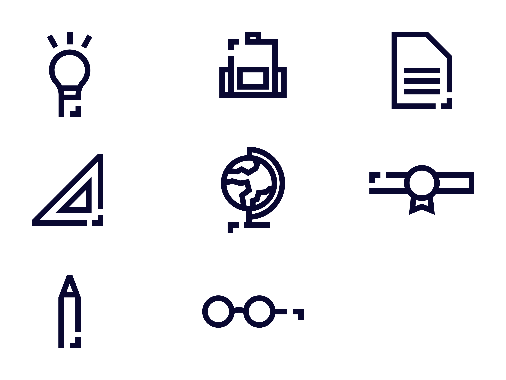
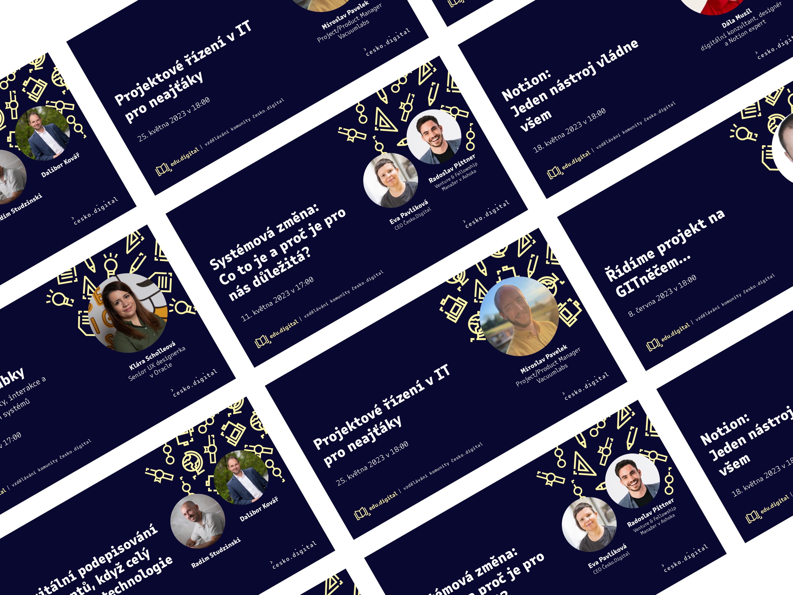

Preparation
— 01
— The target group is people who want to be educated in these technical and non-technical fields in the context of gaining new experience for future application in projects or just to expand their knowledge.
— As this is a project of the non-profit organization Česko.Digital it was a requirement to keep some appearance that the project is a project of a non-profit organization.
Design of visual identity
— 02
— The logo consists of a short logo and a long logo.
— The logo is designed to signify the book, which is one of the main symbols of education.
— The logo is made up of bold lines that are placed in a way to make the logo more minimalistic. The 2 edges represent the square brackets that close the pages of the book to mark the symbol of technology.
— Next to the book is a little beak, which is also part of the visual identity of Česko.Digital. The beak is designed to connect the visual identity with the visual communication of the non-profit organization.
— The colors consist of the color combination of the visual identity Česko.Digital, which is specifically designed for the edu.digital project. The primary dark blue colour is complemented by a lighter yellow.
— The visual communication of the logo is completed by illustrations that are specially designed for the visual identity of edu.digital. Each illustration is made of a bold line, which is complemented by a beak.
Final Look
— 03

— Logo and colours of visual identity edu.digital

— Illustrations

— Application of visual identity elements